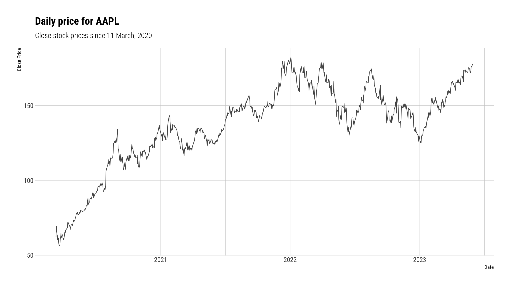
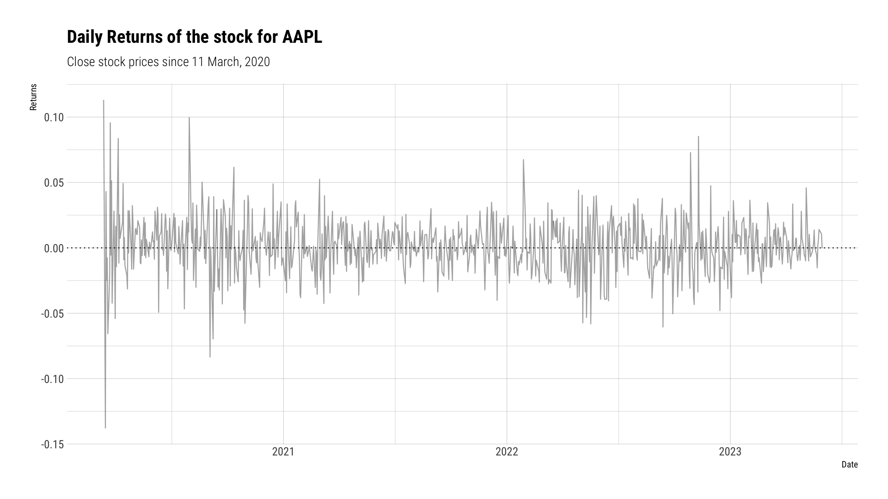
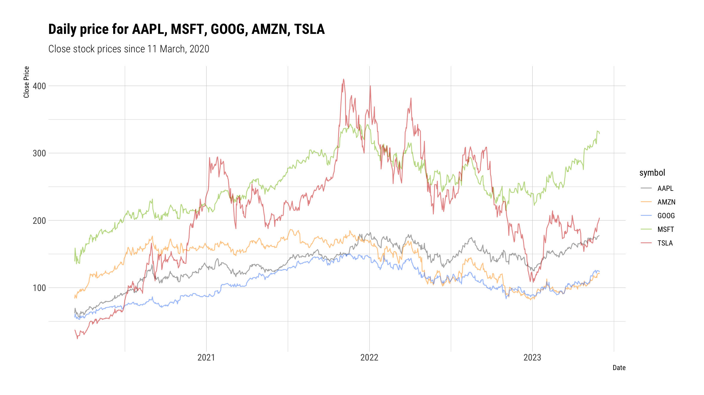
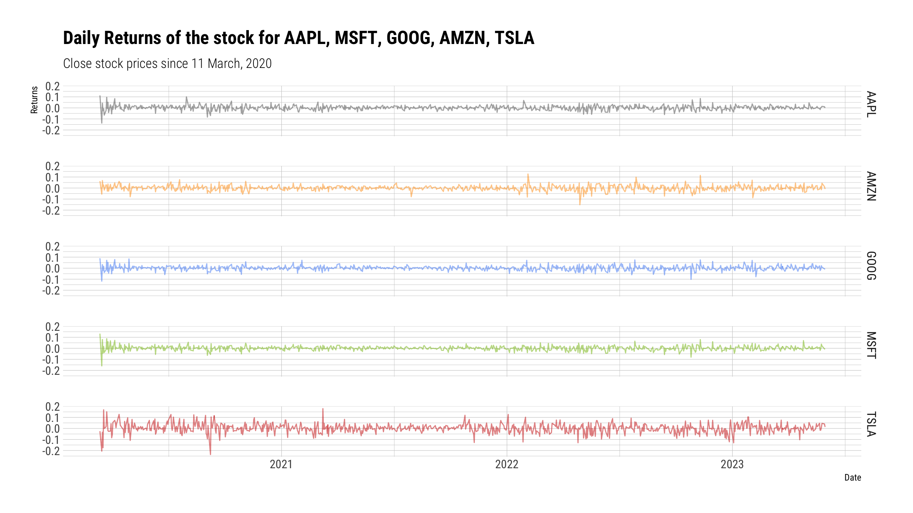

Return Analysis
An illustration of the Data Pipeline with R and Rmarkdown
Single company analysis
For this single company analysis, we’ll be focusing on the company Apple
To narrow our focus, we will restrain our analysis to a given timeframe. Let’s focus on the performance of the stocks of Apple from the beginning of the pandemic (March 11 2020) until now.
The data is stored in an Excel (.xlsx) sheet. We have imported it using the read_xlsx() function from {readxl} to import it
We can explore the data by printing its first 6 lines:
# A tibble: 6 × 8
symbol date open high low close volume adjusted
<chr> <dttm> <dbl> <dbl> <dbl> <dbl> <dbl> <dbl>
1 AAPL 2013-01-02 00:00:00 19.8 19.8 19.3 19.6 560518000 16.8
2 AAPL 2013-01-03 00:00:00 19.6 19.6 19.3 19.4 352965200 16.6
3 AAPL 2013-01-04 00:00:00 19.2 19.2 18.8 18.8 594333600 16.1
4 AAPL 2013-01-07 00:00:00 18.6 18.9 18.4 18.7 484156400 16.0
5 AAPL 2013-01-08 00:00:00 18.9 19.0 18.6 18.8 458707200 16.1
6 AAPL 2013-01-09 00:00:00 18.7 18.8 18.4 18.5 407604400 15.8Understanding the data
Tidying and transforming
Since we are interested in the performance of the stock from the beginning of the pandemic, we can use the function filter() from {dplyr}.
Visualising the data
With this data and the functions in ggplot(), we can create a first visualisation of the closing stock price. We set the dates on the x axis and the close price in the y axis.

The loop of Understanding:
The visualisation offers a first clance. We can transform again to ask the questions on the returns. We use the function mutate(), alongside lag(0 to create a column with the daily (log) returns.
We can construct a visualisation with this. Additionally, we can add layers to our visualisation to decorate it at will.

We can obtain a summary table for some summary statisics with summarise()
# A tibble: 1 × 2
`Average Return` `Average Risk (SD)`
<dbl> <dbl>
1 0.00130 0.0215And, seeing that the visualisation shows periods of high volatility in the year 2020, we can compute yearly measures of risk and volatility:
# A tibble: 4 × 3
year `Average Return` `Average Risk (SD)`
<dbl> <dbl> <dbl>
1 2020 0.00373 0.0283
2 2021 0.00116 0.0158
3 2022 -0.00124 0.0224
4 2023 0.00302 0.0142Analysis for all companies
Plotting the stock price
Here’s a chart with the closing stock prices for all companies.

From the plot, we can gather that TESLA INC (TSLA) has the clearest trend of growth. However this seems to be associated with a very high risk, as it the prices look very variable over the years.
Returns by company
To gain more insight in what pertains returns of these stocks, we can compute the returns for all companies. For easier visualisation, we can separate them according to the company.

Average returns and Risk over the years
| symbol | 2020 | 2021 | 2022 | 2023 |
|---|---|---|---|---|
| AAPL | 0.3725 | 0.1156 | -0.1244 | 0.3015 |
| AMZN | 0.3255 | 0.0093 | -0.2731 | 0.3510 |
| GOOG | 0.2215 | 0.1991 | -0.1948 | 0.3200 |
| MSFT | 0.2302 | 0.1641 | -0.1347 | 0.3052 |
| TSLA | 0.9018 | 0.1603 | -0.4186 | 0.4894 |
| symbol | 2020 | 2021 | 2022 | 2023 |
|---|---|---|---|---|
| AAPL | 2.8270 | 1.5809 | 2.2447 | 1.4157 |
| AMZN | 2.3747 | 1.5217 | 3.1579 | 2.3142 |
| GOOG | 2.3415 | 1.4864 | 2.4442 | 2.1991 |
| MSFT | 2.6780 | 1.3246 | 2.2270 | 1.8311 |
| TSLA | 5.3837 | 3.4152 | 4.2269 | 3.8737 |